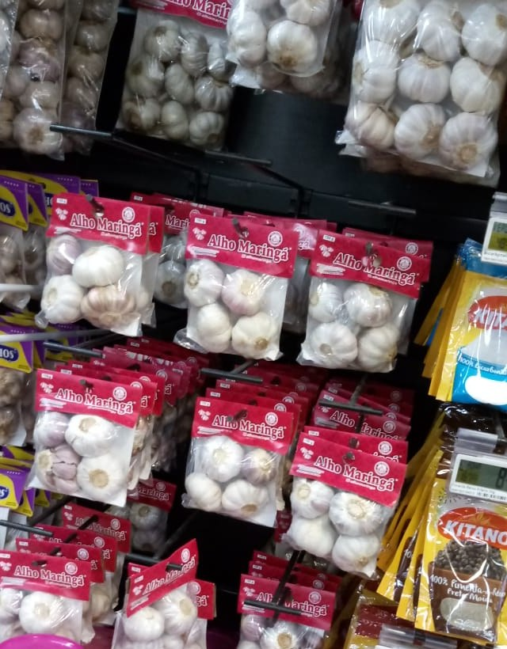
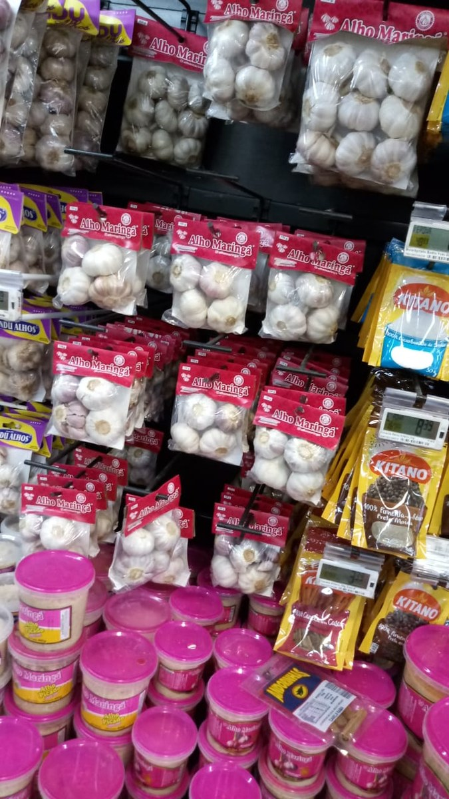
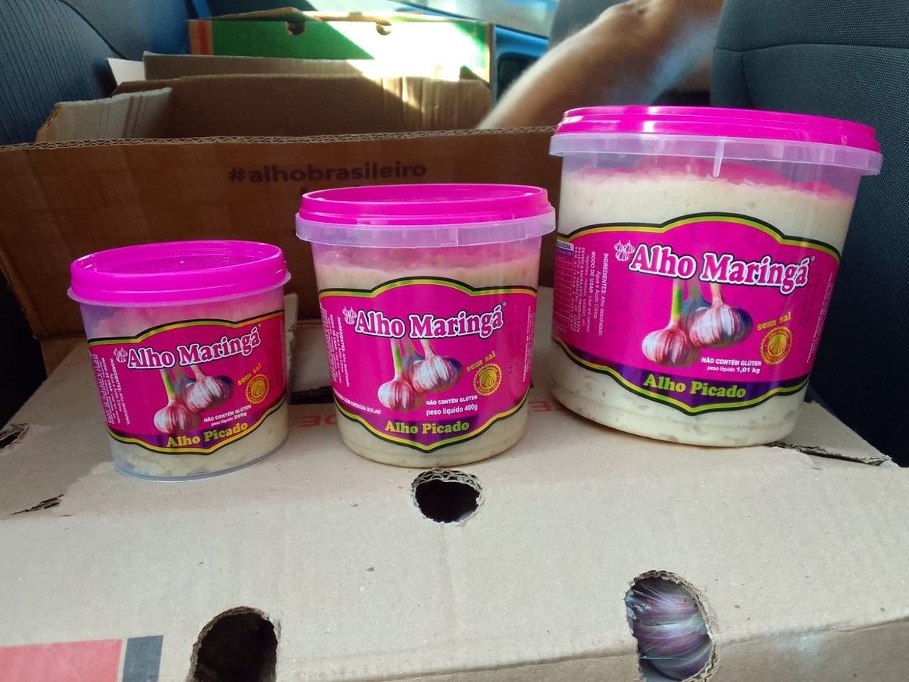

Compostos bioativos
O alho contém compostos sulfurados, como a alicina, formados quando o dente é cortado ou triturado.
Produtos derivados do alho para o dia a dia, com as marcas Alho Maringá, Alho Zani e Alho Arapongas.


A Alho Zani atua em Arapongas-PR com a comercialização de produtos derivados do alho, representando as linhas Alho Maringá, Alho Zani e Alho Arapongas.
A proposta é oferecer opções práticas para consumidores, mercados, comércios e clientes que buscam alho em diferentes apresentações e temperos para o preparo de alimentos.
Endereço
Rua Realejo, nº 302 — Conjunto Centauro
Arapongas-PR • 86709-230
Telefone
(43) 99980-8756
Confira as principais apresentações disponíveis. As fotos abaixo são registros fornecidos pela empresa e funcionam como referência visual.
Nenhum produto encontrado.
O alho é um alimento tradicionalmente utilizado na culinária e contém compostos sulfurados, além de micronutrientes.
O alho contém compostos sulfurados, como a alicina, formados quando o dente é cortado ou triturado.
O consumo regular de alho como parte de uma alimentação equilibrada é estudado por sua possível relação com alguns marcadores cardiovasculares.
O alho fornece substâncias bioativas que participam de mecanismos antioxidantes do organismo.
As diferentes apresentações facilitam o preparo e ajudam a incorporar sabor às refeições do cotidiano.
Quando o alho é cortado, amassado ou triturado, ocorre uma reação que produz compostos sulfurados responsáveis por parte do aroma e do sabor característicos.
São diferentes apresentações do mesmo ingrediente. O alho triturado oferece praticidade e pode ser incorporado rapidamente a molhos, carnes, arroz, massas e outros preparos.
Ele pode ser usado em refogados, carnes, massas, molhos, arroz, feijão, legumes, sopas e diversos temperos. A intensidade varia conforme a quantidade e o modo de preparo.

O alho pode acompanhar preparos simples ou sofisticados. Use a criatividade!

Base clássica para refogados, molhos e massas.

Excelente para marinadas, temperos e finalizações.

Uma combinação saborosa para massas e recheios.

Ajuda a construir aroma e sabor desde o início do preparo.
Preencha seus dados e informe o que você procura. O site prepara a mensagem para envio pelo WhatsApp da empresa.